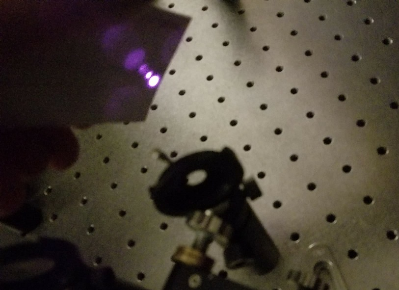

Viewing IR Light with Your Phone (Or Laptop)

Traditionally I use this $2000 handled infrared viewer when aligning our Ti:S beam. But recently I've been finding that my phone (a Samsung S8) is sensitive to IR light, and that it's way easier to use than an infrared viewer when aligning the laser. Besides being more flexible with viewing angles (since your face doesn't need to be right next to the viewer anymore), it also makes it easy to show others in the room what the beam path looks like. The featured image to this post is what the beam path looks like to my phone.
My labmate has a new(ish) iPhone, and we found it seemed to have an IR-stop filter, so it couldn't see the beam. I grabbed a webcam from a nearby desktop and that worked great as well, here's a video of what that webcam saw:
So before you go buying that infrared viewer, try out your phone, or the webcam on your computer.